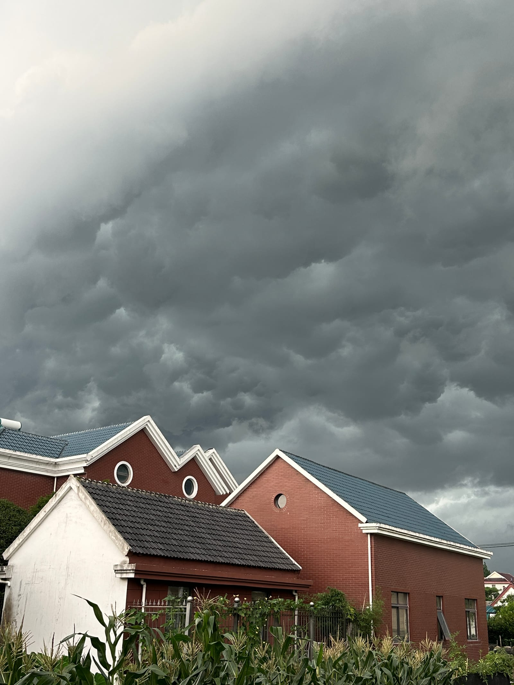

乌云从远处推来，层层叠叠地压在屋顶上。天空被灰黑色云团占满，光线迅速暗下去，红砖墙、白檐口、蓝灰色瓦片都失去平日的明亮，只剩清冷的轮廓。屋脊沿着云层下方起伏，尖角分明，像被阴影切割出来的一排静物。
风先从田地里经过。玉米叶被吹得倾斜，叶尖互相刮擦，发出细碎而密集的声响。院墙边的草木开始摆动，栏杆上的藤蔓贴着铁条晃动。空气变得潮湿，泥土、草叶、墙面和瓦片都带着将雨未雨的气息。
云层继续下压，颜色由灰转深。低处的云团翻卷堆积，边缘模糊，像浓重的烟雾在屋顶上方缓慢移动。远处的屋舍被暗光笼罩，白色墙面显得发冷，红砖墙也沉下颜色。窗子半开，玻璃反出一点微弱的天光，随即又被阴云吞没。
雷声从云后滚过，先低沉，后扩散。片刻之后，雨点落下，打在瓦片、屋檐、玉米叶和铁栏杆上。起初声音稀疏，随后变得紧密，连成一片连续的雨声。屋顶上的水顺着瓦沟流下，檐口挂起细密的水线。墙根处的泥土被打湿，草叶贴近地面，玉米秆在风雨中摇摆。
雨势加重后，房屋的线条被水汽遮住。红砖墙上出现深浅不一的湿痕，白墙泛出灰色，瓦面泛着暗光。天地之间的距离似乎被压缩，云、雨、屋顶、田地连成同一片沉重的色调。风穿过屋角，雨斜斜扫过院落，植物伏低，栏杆发出轻微震动。
暴风雨持续推进，遮蔽远景，也清洗近处。屋檐、墙面、田垄、草叶在雨中重新显出质地。等云层移走，雨水会停在瓦缝和叶脉之间，空气会变得清透，湿润的红砖与青草在暗淡余光中慢慢恢复颜色。